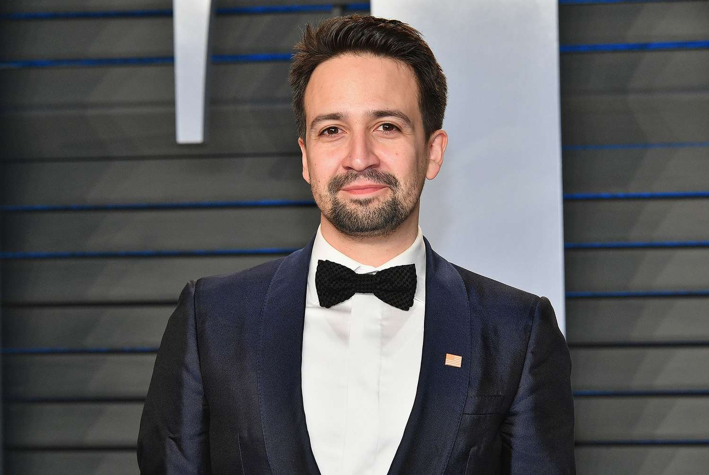
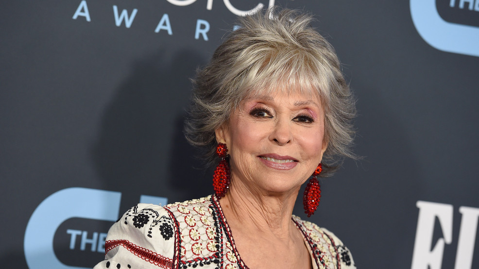
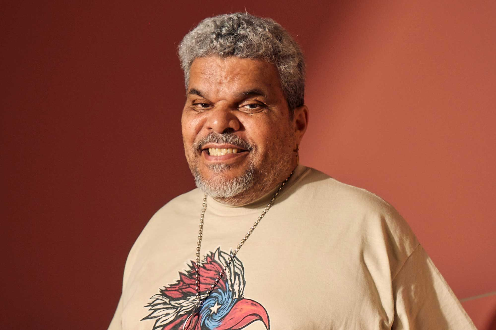
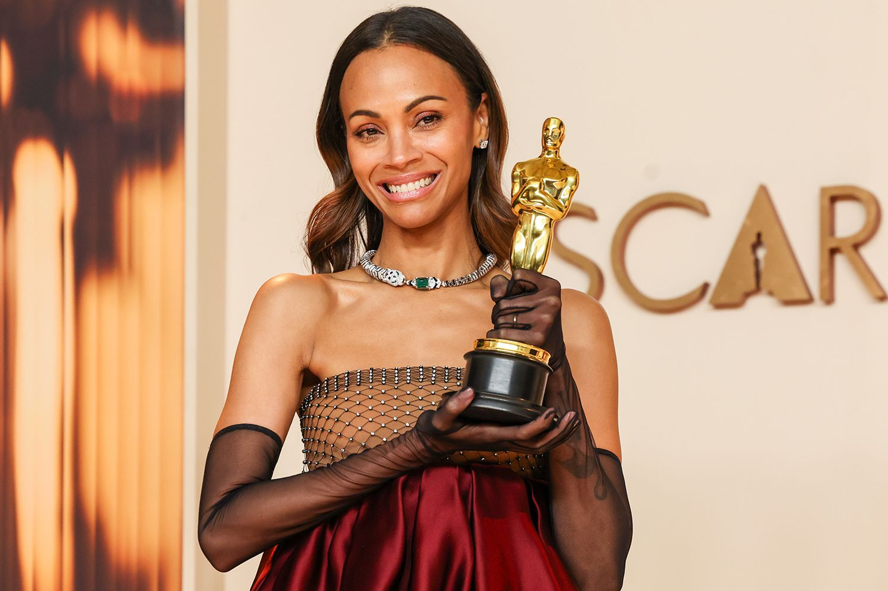

A brief glimpse of the culture

Lin Manuel Miranda is a famous composer and most known for his work with Hamilton. He always makes sure to shine light on the PR community!

Rita Moreno is well known for her work in the original West Side Story. To my understanding she was the only ethical Puerto Rican casted in the movie

Luis Guzman has been in many movies, he grew up in the Lower East Side like I did. I got to meet him once but did not get a picture with him.

Zoe Saldana is an actress who has always been one of my favorites. She is another artist that always shines light on her latino hertiage and that meant a lot to me growing up.